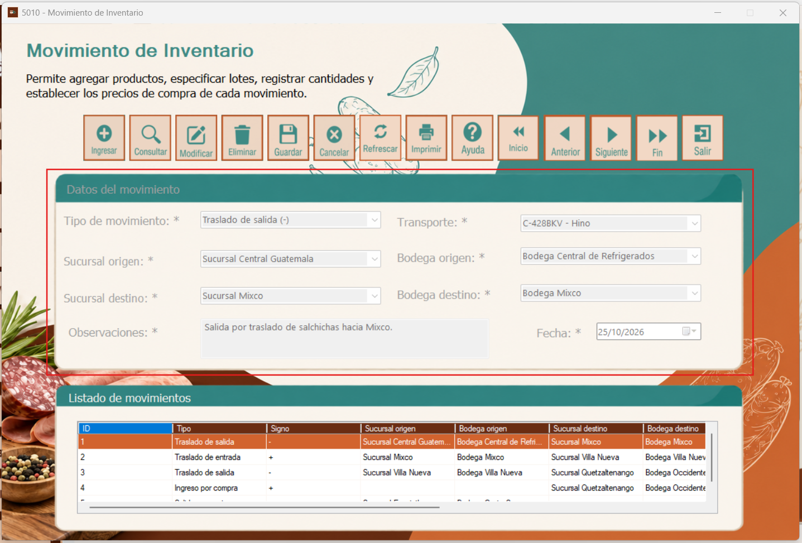
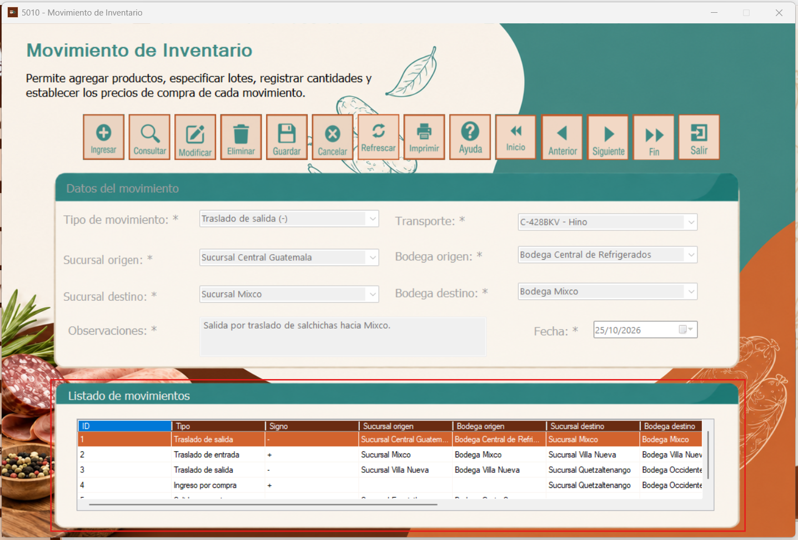

El formulario Movimiento de Inventario permite registrar y consultar operaciones que afectan el inventario, incluyendo movimientos entre sucursales y bodegas. En él se identifican el tipo de movimiento, su origen y destino, el transporte relacionado y las observaciones correspondientes.
Al abrir la ventana 5010 - Movimiento de Inventario, se muestra en la parte superior el título del formulario y una barra de botones para administrar los registros. Debajo se encuentra el apartado Datos del movimiento, donde se visualiza la información de la operación seleccionada. En la parte inferior aparece el Listado de movimientos, que permite revisar las operaciones registradas y seleccionar una de ellas.
.png)
La barra superior contiene los botones Ingresar, para iniciar un nuevo registro; Consultar, para buscar movimientos; Modificar, para editar un registro seleccionado; Eliminar, para solicitar su eliminación; y Guardar, para registrar la información o los cambios realizados.
También incluye Cancelar, para abandonar una operación en curso; Refrescar, para actualizar los datos; Imprimir, para acceder a la impresión; y Ayuda, para consultar las instrucciones del formulario. Los botones Inicio, Anterior, Siguiente y Fin permiten desplazarse por los registros disponibles, mientras que Salir cierra la ventana.
Para modificar o eliminar un movimiento, seleccione primero el registro correspondiente del listado.
.png)
En la sección Datos del movimiento se selecciona el Tipo de movimiento, que identifica la operación y su efecto sobre el inventario. En el ejemplo aparece un Traslado de salida (-). Los campos Sucursal origen y Bodega origen indican desde dónde se realiza el movimiento; por su parte, Sucursal destino y Bodega destino identifican el lugar al que se dirige.
El campo Transporte muestra el vehículo relacionado con la operación. En Observaciones se describe el motivo o detalle del movimiento y en Fecha se indica cuándo se registra la operación. Los campos que aparecen con asterisco (*) están marcados como obligatorios en la interfaz.
Al ingresar un movimiento nuevo o modificar uno existente, complete o revise los campos habilitados y utilice Guardar cuando corresponda.

En la parte inferior se encuentra el Listado de movimientos, que presenta los registros almacenados en una tabla. Entre las columnas visibles se encuentran ID, Tipo, Signo, Sucursal origen, Bodega origen, Sucursal destino y Bodega destino. Esta información permite identificar y comparar los movimientos realizados.
Seleccione una fila para revisar el movimiento correspondiente. En las capturas se observan ejemplos de traslados de salida, traslados de entrada e ingresos por compra. El signo ayuda a reconocer si el tipo de operación representa una salida (-) o una entrada (+) de inventario.
